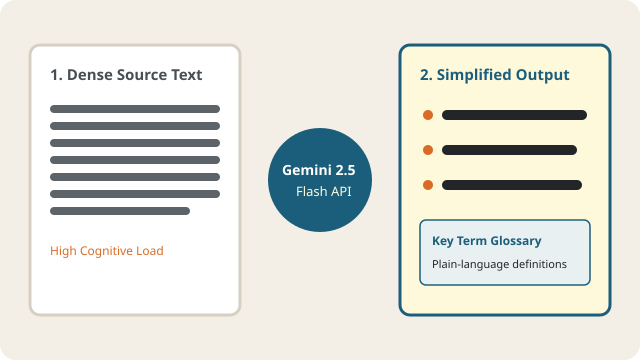

Proposed AI Text Simplification Feature (Powered by Google Gemini)
Reducing Cognitive Load Through Lexical and Syntactic Adaptation
University textbooks frequently rely on passive voice, deeply nested subordinate clauses, and dense academic jargon. For learners with dyslexia, decoding these convoluted sentence structures consumes valuable working memory that should be dedicated to conceptual analysis.
Our proposed AI Text Simplification feature integrates the Google Gemini API (`gemini-2.5-flash`) via a secure backend proxy. Using system instructions tailored to the British Dyslexia Association Style Guide, the engine converts dense passages into short, active-voice sentences, structured bullet points, and plain-language glossaries without losing academic rigor.

Interactive UI Concept: Before & After Simplification Workspace
Below is the interface preview of the LexiLearn Simplifier Workspace. Students paste a complex textbook passage on the left, select their desired reading complexity level, and receive structured output on the right:
1. Original Dense Textbook Input (64 Words, 1 Sentence)
"Photosynthetic phosphorylation, a biochemical process contingent upon light-energy absorption by chlorophyllous pigments situated within the thylakoid membranes of chloroplasts, facilitates the enzymatic synthesis of adenosine triphosphate (ATP) from adenosine diphosphate (ADP) and inorganic phosphate, thereby establishing the primary energetic currency required for subsequent carbon-fixation reactions."
Readability Diagnostics: Passive syntax, 4 nested clauses, high visual crowding.
2. Gemini 2.5 Flash Simplified Output
Core Takeaway: Plants use sunlight to build cellular energy (ATP) inside their leaves.
- Step 1 (Light Capture): Green chlorophyll pigments inside the leaf's thylakoid membranes absorb energy from sunlight.
- Step 2 (Energy Building): The plant uses this light energy to attach a phosphate group onto ADP, turning it into high-energy ATP.
- Step 3 (Fueling Growth): ATP acts like a charged battery that powers the next stage of photosynthesis (turning carbon dioxide into sugar).
Extracted Key Terms Glossary
- Photophosphorylation: Using light energy to make ATP fuel.
- Thylakoid: Tiny disc-shaped sacs inside plant chloroplasts.
- ATP: The main energy molecule that powers living cells.
Four-Stage Linguistic Transformation Workflow
When a student submits a reading passage, our planned Gemini API prompt pipeline enforces four strict transformation rules:
- Sentence Segmentation: Compound-complex sentences exceeding 20 words are divided into clear, single-idea statements so readers never lose track of the subject.
- Active Voice Conversion: Indirect passive phrasing ("The experiment was conducted by researchers") is rewritten into direct active phrasing ("Researchers conducted the experiment").
- Contextual Glossary Retention: Essential university terminology is preserved—never watered down—so students still learn exam vocabulary, supported by immediate plain-language definitions.
- Visual & Structural Chunking: Dense paragraphs are converted into numbered steps and bolded anchor phrases to prevent line-skipping.